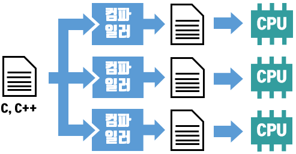

컴파일러(Compiler)
컴파일러란 원시 언어에서 목적 언어로 바꾸는 작업을 하는 것을 말한다.
좀더 쉽게 말하면 A라는 언어에서 B라는 언어로 통역을 해주는 작업 또는 그 작업을 하는 것이라고 할 수 있겠다.
프로그래밍에서는 주로 고급언어에서 기계어로 바꿔주는 것을 말하는 것 같다.
고급언어란 프로그래밍을 하는데 있어서 사람이 알아보기 쉽운 문법을 가진 언어를 말한다.
기계어는 0,1로 이루어진 컴퓨터가 알아볼 수 있는 언어를 말한다.
고급언어와 기계어 사이에 어셈블리어라는 중간 언어가 있다.
컴파일러로 변환된 코드는 별도의 파일로 저장된다. (JAVA같은 경우는 .java 파일을 컴파일하면 .class 파일이 나온다.)
하지만 JAVA의 경우 주의해야 할 점이 있다.
java에 들어가기 전에 C나 C++의 컴파일러에 대해서 조금 알아보고 가자.
C나 C++의 경우 컴파일러는 고급 언어에서 기계어로 바꾸는 작업을 한다.
하지만 여기에 문제가 존재한다. CPU나 운영체제마다 가지고 있는 기계어가 조금씩 다르다는 점이다.
이 때문에 C나 C++을 실행하려는 CPU나 운영체제 별로 별도의 컴파일러가 필요하다. 같은 고급 언어로 작성한 코드라도 다른 기계어 코드를 생성해야 하는 것이다.

하지만 JAVA에서는 컴파일러가 기계어로 바꾸는 것이 아니라, '바이트 코드'라는 것으로 변환 시킨다. 이 '바이트 코드'는 JVM(자바 가상 머신, Java Virtual Machin)이라는 가상 머신에서 실행된다.
JAVA는 이러한 특징을 가지고 있어서 JVM을 설치 할 수 있는 환경이면 어떠한 CPU나 운영체제에서도 하나의 고급언어와 하나의 컴파일러만 있으면 실행 시킬 수 있다.

JAVA의 이러한 특성은 장점도 있지만 단점도 있다. 대표적인 단점으로는 속도가 느리다는 점을 뽑을 수 있다. C나 C++는 컴파일러를 통해 바로 기계어로 변환되기 때문에 빠르다는 장점이 있지만 JAVA는 JVM을 거처야 하기 때문에 그 속도가 C와 C++에 비해서 느리다는 평가를 받고 있다.(때문에 영상처리와 같은 작업에는 적합하지 않다고 한다.)
인터프리터(interpreter)
프로그래밍 언어의 소스 코드를 바로 실행하는 컴퓨터 프로그램 또는 환경을 말한다.
고급언어를 즉시 실행시킬 수 있다는 장점을 가지며, 코드의 수정을 바로 테스트 해 볼 수 있어서 프로그램 개발 단계에서 종종 사용된다.
장점으로는 컴파일 과정이 없기 때문에 크기가 큰 파일도 즉시 실행 시킬 수 있다는 점이 있다.
단점으로는 실행할 때 마다 번역을 해야하기 때문에 인터프리터가 있어야만 실행이 가능하며 효율성이 떨어진다는 점을 들 수 있다.
JIT 컴파일(Just In Time Compilation)
JIT 컴파일 또는 동적 번역(dynamic translation)은 프로그램을 실제 실행하는 시점에서 기계어로 번역하는 컴파일 방법이다.
위에서 설명했던 바이트 코드나 인터프리터는 프로그램을 실행할 떄 마다 번역(해석)을 하고 실행 시켜야 했다.
하지만 JIT 컴파일 방식은 프로그램을 실행할 때 컴파일하며 기계어로 변환하여 사용한다. 때문에 재사용할 때 해석할 필요가 없어져 성능이 향상되었다.